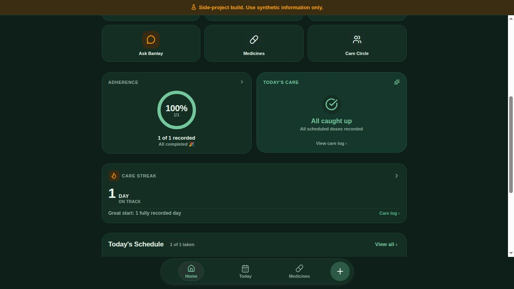

Team project · Original Expo application
Alaga
A medicine care-log application that brings confirmed medicine schedules, dose records, inventory, and family care workflows into one interface.

Actual Expo web interface with an isolated synthetic visitor session. Dose recording was verified against the original PostgreSQL API.
Project scope
- Medicine schedules and confirmed dose records
- Care-circle access and patient context
- Inventory and attributable care history